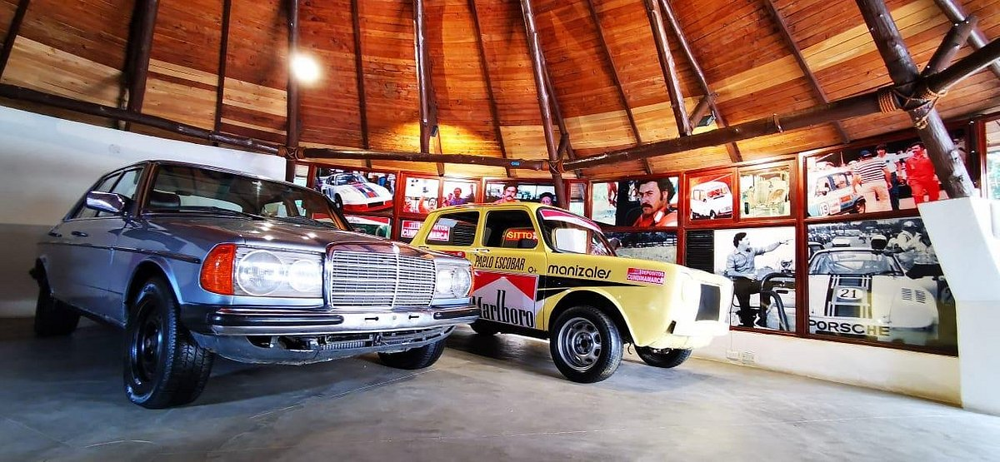
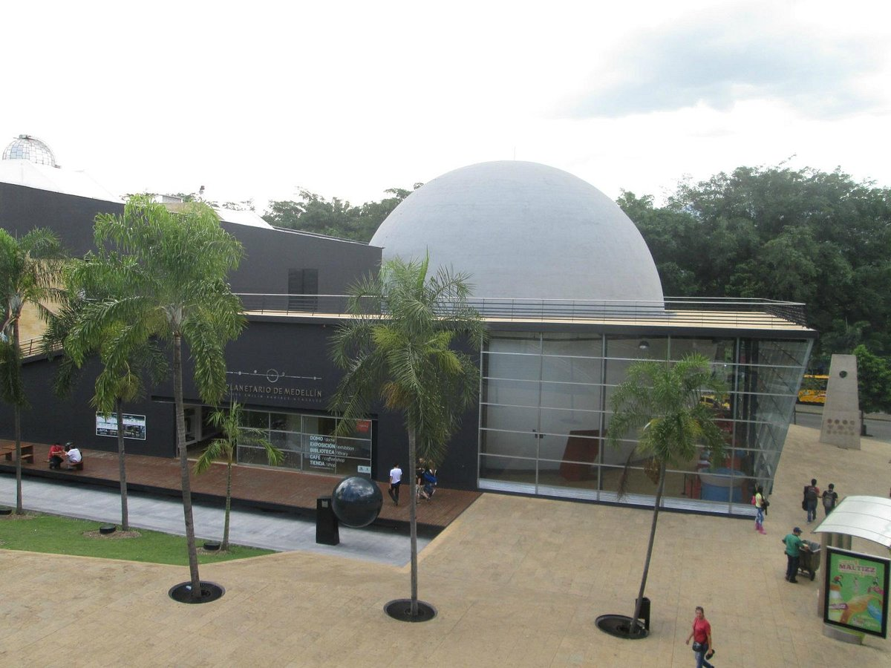

Museo de Antioquia

El Museo de Antioquia cuenta con más de 5.000 piezas: pinturas, dibujos, esculturas y textos que reúnen diferentes expresiones artísticas de la región y el país, además de objetos de gran valor histórico como armas, bienes personales, documentos, cerámicas, piezas de orfebrería indígena, textiles; entre otros. De igual manera, tiene obras permanentes de grandes artistas antioqueños como Eladio Vélez, Franciso Antonio Cano, Débora Arango y Pedro Nel Gómez, quien realizó 11 murales que tiempo atrás decoraron el Palacio Municipal y hoy son un gran atractivo del Museo.
Museo Pablo Escobar
En esta Casa Museo podrá encontrar un acercamiento a la Historia de La Familia Escobar Gaviria, obtener respuesta a todas tus preguntas acerca de la vida de estos Míticos personajes. Montarte y tomarte cuantas fotos quieras en sus Carros y Motos. Conocer la Moto de James Bond. Entre muchas Historias que te sumergirán en el mundo que ellos vivieron.
Planetario de Medellin
El Planetario de Medellín Jesús Emilio Ramírez González ofrece a sus visitantes un escenario a la altura de los más modernos del mundo, con un domo digital para experiencias de inmersión de alta calidad. Trocamos la mirada de los planetarios tradicionales hacia las ciencias del espacio, e incorporamos las ciencias de la tierra para observar, entre el pasmo y la esperanza, nuestro desconocido planeta.
Museo casa de la Memoria

El Museo Casa de la Memoria se gesta desde las iniciativas y resistencias de las víctimas del conflicto armado colombiano, quienes, a través de ejercicios de construcción colectiva de memorias y de reparación simbólica, buscaron una Casa para el diálogo abierto y plural, crítico y reflexivo, que contribuyera a la superación del conflicto y las violencias en Medellín, Antioquia y el país.